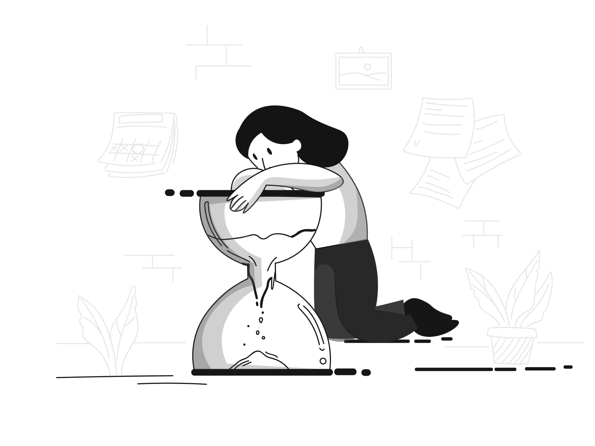

{% include "includes/encabezadoRecursos.html" %} {% include "includes/cargador.html" %}
Pendiente.
arrow_back
Pendiente.
Volver al inicio
Debe esperar a que su docente evalué algunas preguntas.
Debe esperar a que su docente evalué algunas preguntas.
Algunas preguntas del cuestionario deben ser evaluadas de manera manual por el docente.

Regresar
{% include "includes/footerRecursos.html" %}